Broadview is huge inside, with wide hallways traversing the length and breadth of each floor. If you were more familiar with the place it would probably be very easy to find your way around, but on our trip it seemed that there were too many staircases, numerous offices and closets and empty rooms, halls that went off in every direction. It's also very dirty, with animal crap and paint peelings all over the floor.
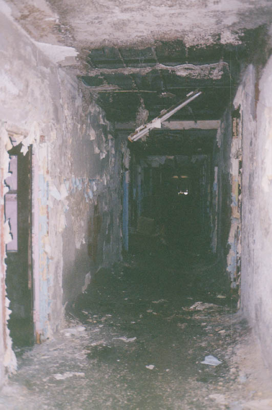
With that said, it's interesting to note just how much stuff there is in the Center--or was when we were there. Most of it is broken in some way, or rotted, or falling apart. On the first floor were large piles of furniture and boxes and equipment which spilled out of the rooms and even blocked the hallway entirely in certain places. The obvious reason for the presence of all these unbroken, unstolen artifacts is the proximity of the police station next door.
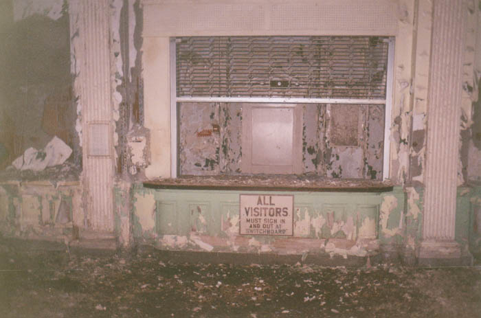
Above and below you can see the main lobby of the building, including the front desk where visitors had to check in. Its gate is partially pulled down.
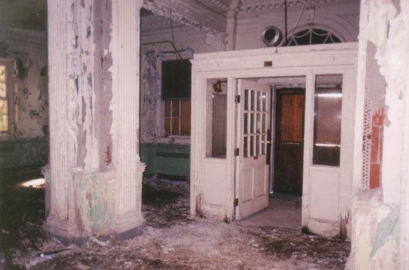
It's all filthy, and there's not much that's salvagable in any way, but there were some interesting artifacts. On the first floor were the remains of the pharmacy and several storage closets in which we found old pill bottles with typewritten labels. Below is a picture of a prescription-littered desk in the pharmacy.
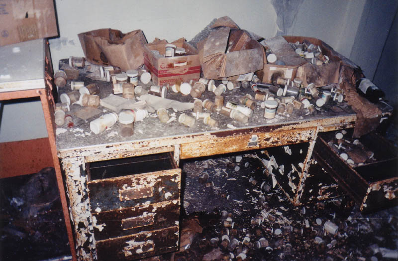
We also found boxes of empty glass bottles which had once held Thorazine--the most famous of the heavy-duty psychotic drugs. They apparently had plenty of use for it. Below you can see the heavily gated pharmacy window with the little slot where the patients got their medicine.
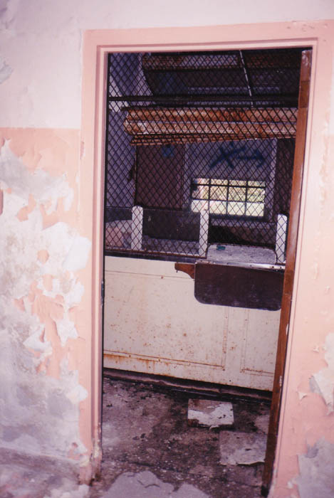
Many of the patient rooms are eerily intact with beds and different pieces of equipment inside. One had a bedpan perched on the rotten cot. In another was one of those rigid tables they have in hospital rooms that go over your lap.
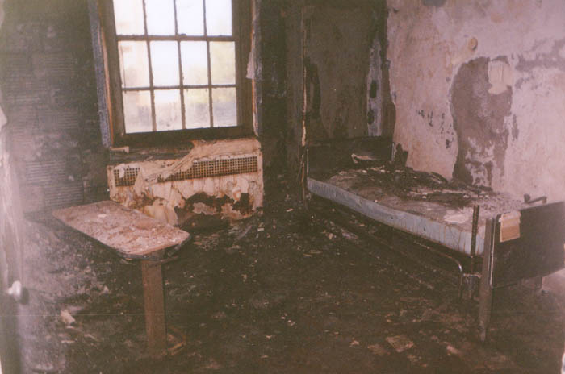
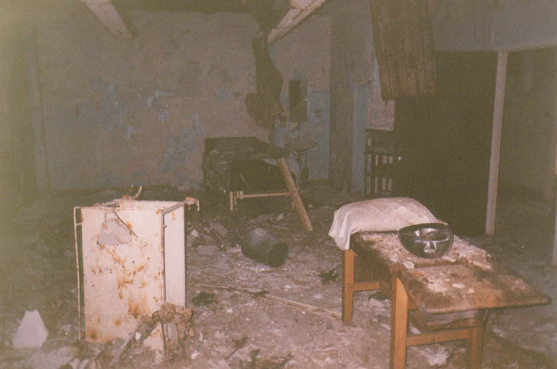
Stripped-out hospital beds line the halls. Other types of furniture fill certain first floor rooms almost to the ceiling, spilling out into the halls and blocking the way. Much of the furniture is pretty ordinary institution stuff: waiting room couches, tables, etc.
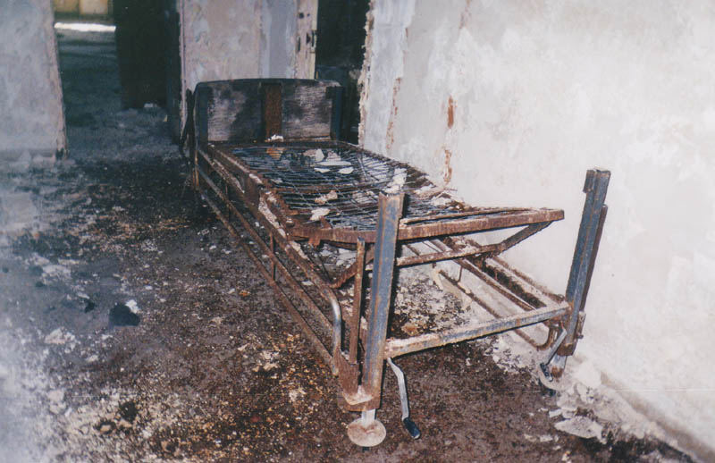
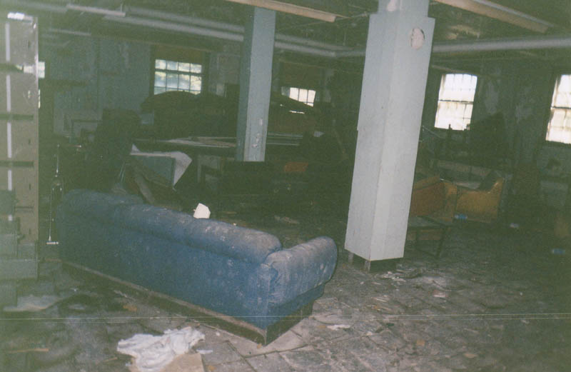
If the place weren't so dirty it would almost seem like it might be reoccupied sometime. They left behind more stuff than you'd think they would want to waste, and just about every room contains some of its original contents, from supply closets to bathrooms.
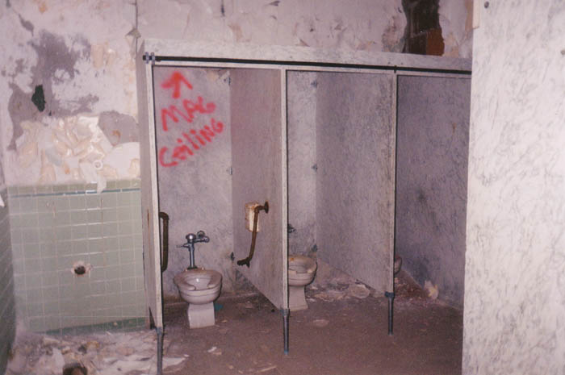
Walking through, it's possible to get an idea what life must have been like for the live-in patients here. From what I read, the complex was nearly self-sufficient. Many rooms are easy to figure out. Below you can see a medical examination room of some kind with white glass-front cabinets and fluorescent light fixtures hanging from the ceiling.
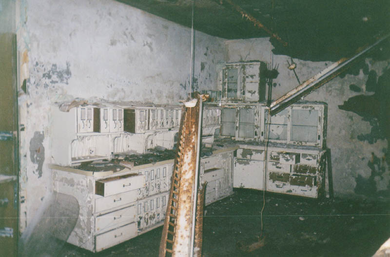
Next is the dentist's office; the exam equipment and spit tray are still standing.
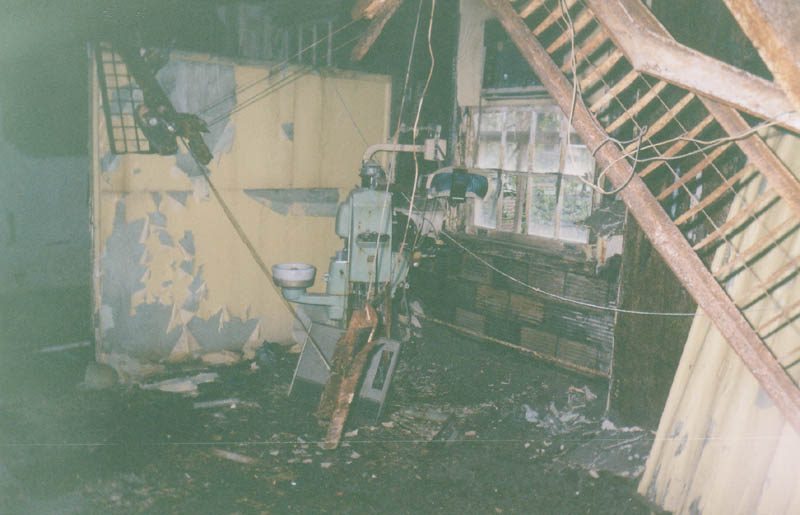
The x-ray laboratory, fitted out with filing drawers, viewing boards, and even a huge film developing machine:
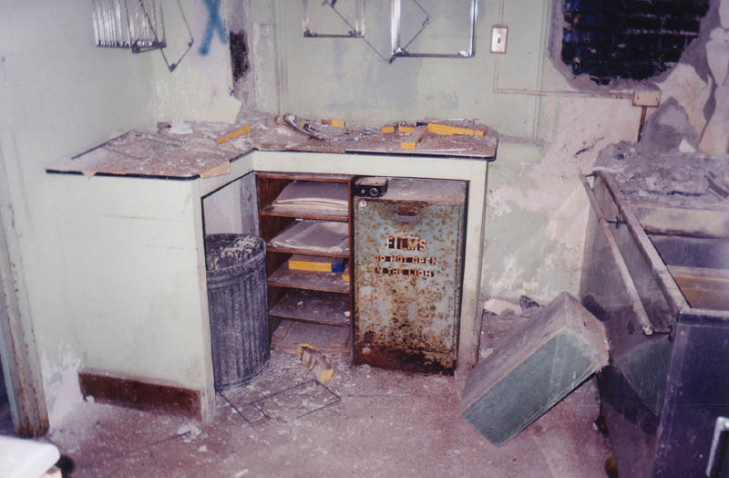
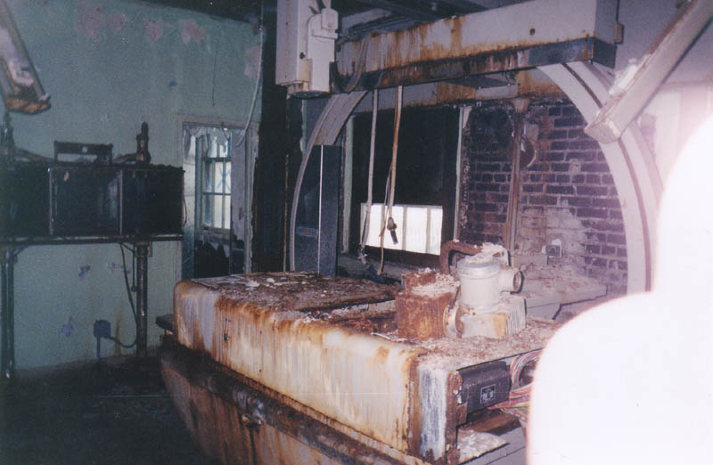
Below you can see the beauty shop with its dryers and hair-washing sinks. They apparently didn't let anybody out for hair appointments.
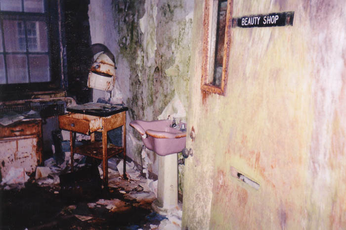
And then some things really are self-explanatory.
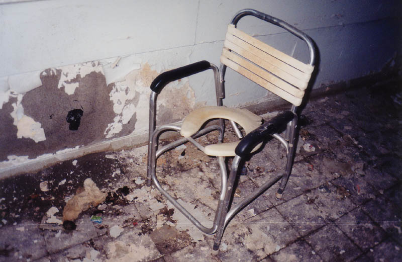
Next we have the non-denominational chapel, which is located at the end of the building on one of the upper floors. A few of the pews have been flipped, but the altar and minister's podium are still there.
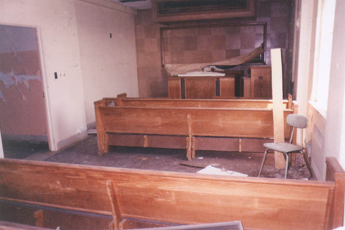
Then there's the kitchen, which is a huge, high-ceilinged room occupying the rear corner on the first floor. Big soup vats and fryers are full of grease so old and filthy that you don't even want to get close to it. Every surface here is coated with some kind of slime. Next to the kitchen is the large mess hall where everybody ate.
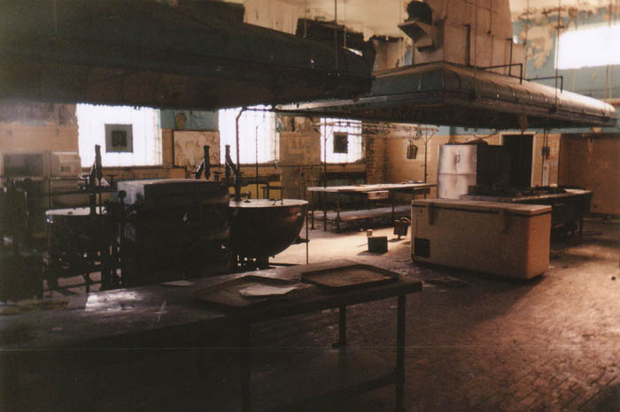
One of the many mysterious relics we came across at the Broadview Center is pictured below: a wooden throne which looks like it might have been used in a play. A Christmas play, maybe? King Lear? The throne was in the main lobby near the front desk.
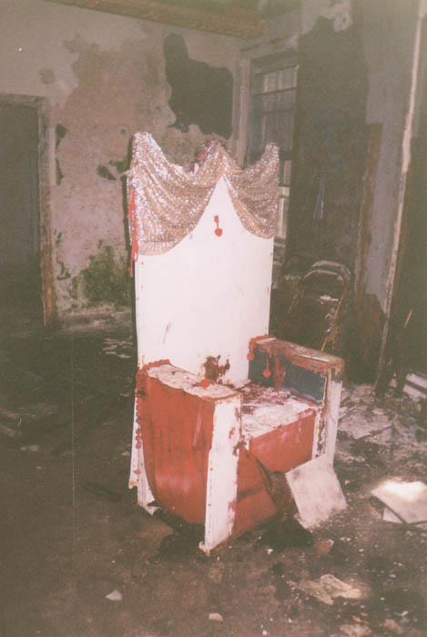
The upper hallways were mostly empty, but in a few there were some stray wheelchairs, as you can see below. I kept waiting for one to start moving and chase us like in The Changeling, but none did.
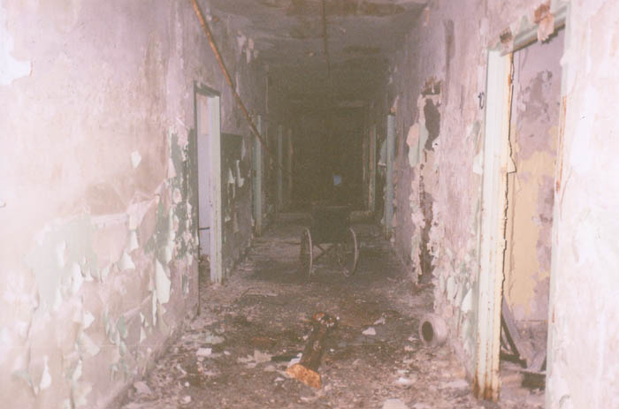
But the weirdest parts of the Center were the third and fourth floors, where the juvenile patients were housed. Click below to take a look.
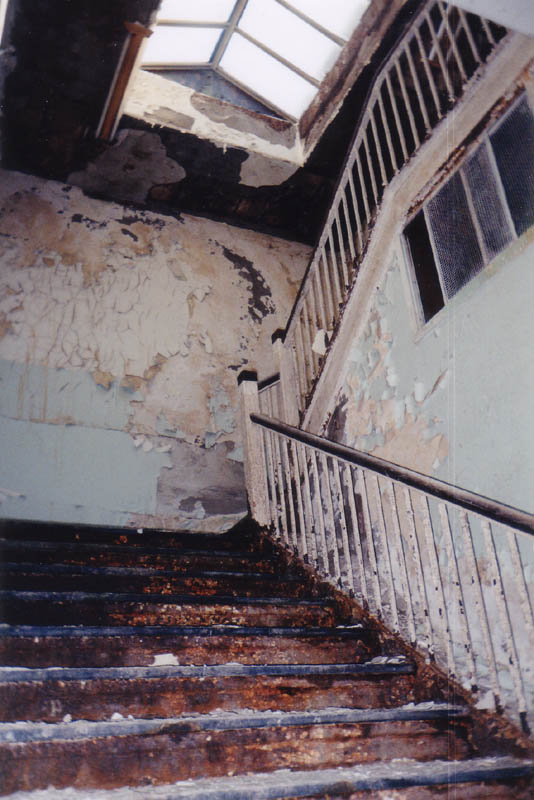
CONTINUE...
Back